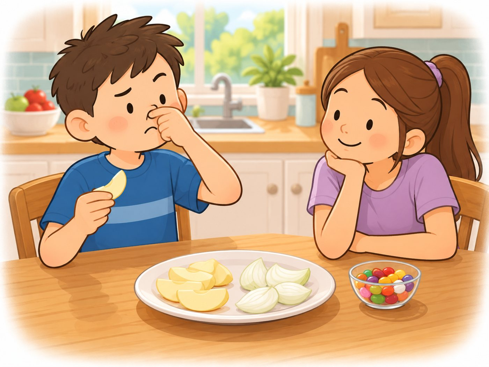

할머니의 목도리
The Star Scarf
⓪ 단어 먼저 □ 맞은편 Words · 클래스카드
① 처음 읽기 분초
② 음원 따라 읽기 □ □
③ 다시 읽기 음원보다 빨리 분초
읽기 TIPmake + 사람 + 것: ‘만들어 주마 → 너에게 → 하나 더’ 순서 그대로 받아요. 누가 한 말인지(She laughed and said)를 먼저 잡고 따옴표 안으로 들어가요.
Words
arrive도착하다
thick두꺼운
knit뜨개질하다 (knit – knitted)
old-fashioned구식인, 촌스러운
whole전체의, 꼬박
sorry미안한
heavily심하게, 많이
freezing몹시 추운
soft부드러운
amazing놀라운, 멋진
proudly자랑스럽게
choose고르다
scarf목도리
neck목
lunch점심
evening저녁
쉬운 단어, 이 글에서는
- look 기본 뜻: 보다이 글에서: a sad look = 슬픈 표정Mom gave me a sad look
- put 기본 뜻: 놓다, 두다이 글에서: put it on = (옷 · 목도리를) 입다, 두르다I put it on and walked
Check Your Reading
✳내용 확인정답 및 해설 p.2 · 4개 이상 통과심경글에 드러난 ‘I’의 심경 변화로 가장 알맞은 것은?
내용 일치글의 내용과 일치하는 것은?
무관한 문장지문을 덮고다음 글에서 전체 흐름과 관계 없는 문장은?
빈칸빈칸에 들어갈 말로 가장 알맞은 것은?
어법지문을 덮고(A), (B), (C)의 각 네모 안에서 어법에 맞는 말로 가장 알맞은 것은?
• Mom asked me (B) [wear / to wear] the scarf.
• I heard my friends (C) [talking / to talk] about it.
Focus Reading
✳핵심 문장 끊어 읽기 · 구조 표시정답 및 해설 p.2①Chunk Reading 6문장 모두 해석되는 만큼 /로 끊고 덩어리 아래 우리말 뒤로 돌아가지 않기!
②★ 문장과 해석이 잘 안 되는 문장은 구조 표시 → Hint 확인 동사 접속사( )형용사구·절< >부사구·절[ ]명사구·절☞ p.6
흐름 지도빈칸에 핵심어를 채우며 글의 흐름을 따라가요 — 마지막 ∴은 글 전체의 결론
Writing Training
✳쉬운 단어 · 빈칸 · 영작지문과 왼쪽 쪽을 가리고 해요지문 속 문법쓰기 전에 확인 · 헷갈리면 Nova Grammar 2권으로!
| 3~4행 | “It looks so old-fashioned,” I said to Mom. — look + 형용사 ‘~하게 보이다’ | ☞ 2권 p.10 POINT 1 |
| 4행 | Mom gave me a sad look. — give + 사람 + 것 ‘~에게 …을 주다’ | ☞ 2권 p.11 POINT 2 |
| 8행 | Mom asked me to wear the scarf. — ask + 목적어 + to 동사원형 | ☞ 2권 p.18 POINT 5 |
| 10행 | I heard my friends talking about it. — hear + 목적어 + -ing | ☞ 2권 p.20 POINT 7 |
A쉬운 단어 하나로 — keep를 써서 우리말을 영어로 쓰세요. 같은 단어, 다른 뜻 · 핵심 이미지: 그대로 두다 · 계속 지니다
이 목도리는 내 목을 따뜻하게 해 준다.
창문을 열어 두세요.
그는 매일 일기를 쓴다.
B우리말에 맞게 빈칸에 알맞은 말을 쓰세요.
할머니가 나를 위해 손으로 그것을 뜨셨다.
Grandma it me by hand.
나는 그것을 두르고 학교에 걸어갔다.
I it and walked to school.
일주일 뒤, 눈이 많이 내렸다.
A week , it snowed .
C우리말을 영어로 쓰세요. ( ) 안의 말을 꼭 쓰세요.
할머니가 그걸 꼬박 한 달 동안 만드셨어. (work on, whole)
너에게 하나 더 만들어 주마. (make, another)
이제 친구들은 나를 ‘Star Girl’이라고 부른다. (call)
“우리 할머니가 나를 위해 그것을 만드셨어.” 나는 자랑스럽게 대답했다. (make, proudly)
코로도 맛을 본다
Your Nose Helps You Taste
⓪ 단어 먼저 □ 맞은편 Words · 클래스카드
① 처음 읽기 분초
② 음원 따라 읽기 □ □
③ 다시 읽기 음원보다 빨리 분초
*jelly beans 젤리빈(콩 모양 젤리)

읽기 TIP명령문은 동사로 바로 시작해요(Hold · eat). ‘잡아라 → 코를’ 순서 그대로 받고, and 뒤 동사도 같은 사람에게 하는 말로 이어 읽어요.
Words
tongue혀
basic기본적인
sour신, 시큼한
bitter쓴
chew씹다
travel이동하다
flavor맛, 풍미
rich(맛이) 진한, 풍부한
flat(맛이) 밋밋한
cold감기
breathe숨 쉬다
right away곧바로
difference차이
rest나머지
together함께
reason이유
쉬운 단어, 이 글에서는
- tell 기본 뜻: 말하다이 글에서: tell the difference = 차이를 구별하다Can you tell the difference?
- name 기본 뜻: 이름이 글에서: name the flavors = 맛의 이름을 대다couldn’t name the flavors

Check Your Reading
✳내용 확인정답 및 해설 p.4 · 4개 이상 통과제목이 글의 제목으로 가장 알맞은 것은?
내용 불일치글의 내용과 일치하지 않는 것은?
문장 삽입지문을 덮고글의 흐름으로 보아, 주어진 문장이 들어가기에 가장 알맞은 곳은?
For the same reason, food tastes flat when you have a bad cold. ( ① ) Your nose doesn’t work well, so the smell can’t get in. ( ② ) Scientists once asked people to hold their noses and eat jelly beans. ( ③ ) But when the scientists let them breathe through their noses again, they knew the flavors right away. ( ④ ) Next time, don’t just taste your food. ( ⑤ )
빈칸글의 내용으로 보아, 빈칸에 들어갈 말로 가장 알맞은 것은?
서술형글을 읽고 질문에 완전한 영어 문장으로 답하세요.
(1) Why does food taste flat when you have a bad cold?
(2) What did the scientists ask people to do?
조건 · (1) Because로 시작하기 · (2) They asked people to를 써서
Focus Reading
✳핵심 문장 끊어 읽기 · 구조 표시정답 및 해설 p.4①Chunk Reading 6문장 모두 해석되는 만큼 /로 끊고 덩어리 아래 우리말 뒤로 돌아가지 않기!
②★ 문장과 해석이 잘 안 되는 문장은 구조 표시 → Hint 확인 동사 접속사( )형용사구·절< >부사구·절[ ]명사구·절☞ p.6
흐름 지도빈칸에 핵심어를 채우며 글의 흐름을 따라가요 — 마지막 ∴은 글 전체의 결론
Writing Training
✳쉬운 단어 · 빈칸 · 영작지문과 왼쪽 쪽을 가리고 해요지문 속 문법쓰기 전에 확인 · 헷갈리면 Nova Grammar 2권으로!
| 3행 | This sounds strange, but it is true. — sound + 형용사 ‘~하게 들리다’ | ☞ 2권 p.10 POINT 1 |
| 3~4행 | Your tongue tells you only a few basic tastes — tell + 사람 + 것 | ☞ 2권 p.11 POINT 2 |
| 9행 | Its smell makes it rich and special. — make + 목적어 + 형용사 | ☞ 2권 p.17 POINT 4 |
| 14행 | the scientists let them breathe through their noses — let + 목적어 + 동사원형 | ☞ 2권 p.19 POINT 6 |
A쉬운 단어 하나로 — taste를 써서 우리말을 영어로 쓰세요. 같은 단어, 다른 뜻 · 핵심 이미지: 혀로 느끼는 맛 · 맛보다 · 고르는 감각
이 수프는 짠맛이 난다.
이 케이크 좀 맛볼래?
그녀는 옷 고르는 안목이 좋다.
B우리말에 맞게 빈칸에 알맞은 말을 쓰세요.
코가 나머지 일을 한다.
Your nose does the of the .
차이를 구별할 수 있는가?
Can you the ?
그런 다음 양파 한 조각을 먹어 보라.
Then eat a of .
C우리말을 영어로 쓰세요. ( ) 안의 말을 꼭 쓰세요.
뇌는 냄새와 맛을 합친다. (put ~ together)
과학자들은 사람들에게 코를 잡으라고 부탁했다. (ask, hold)
다음번에는 음식을 그냥 맛보기만 하지 마라. (next time, just)
초콜릿은 그냥 단맛만 나는 것이 아니다. (taste, just)
홈스테이 가족에게
Hello from Seoul!
⓪ 단어 먼저 □ 맞은편 Words · 클래스카드
① 처음 읽기 분초
② 음원 따라 읽기 □ □
③ 다시 읽기 음원보다 빨리 분초
FromKim Minji <minji.kim@novamail.com>
ToMr. and Mrs. Brown
SubjectHello from Seoul!June 3
Dear Mr. and Mrs. Brown,
Hello! Thank you for your kind email. My name is Kim Minji, and I’m going to stay with your family this summer. I’m fourteen years old, and I live in Seoul with my parents and my little brother. My friends call me “Minnie,” so please call me that, too.
I love cooking. My mom taught me some Korean dishes, so I can make you bulgogi and kimchi pancakes. I hope you like spicy food!
I have a few questions. Could you tell me the weather in July? I want to pack the right clothes. Also, is there a library near your house? Reading English books helps me a lot.
I will send you some photos of my family soon. Your email made me really excited. I can’t wait to meet you!
Best wishes,
Minji
읽기 TIPcan’t wait to ~ = ‘기다릴 수 없다’가 아니라 ‘빨리 ~하고 싶다’. 덩어리째 받아서 ‘빨리 하고 싶어요 → 만나기를’ 순서로 읽어요.
Words
stay머물다, 지내다
kind친절한
dish요리
spicy매운
question질문
weather날씨
pack(짐을) 싸다
clothes옷
photo사진
excited신이 난, 들뜬
a lot많이
can’t wait to빨리 ~하고 싶다
summer여름
cooking요리하기
library도서관
soon곧
쉬운 단어, 이 글에서는
- call 기본 뜻: 전화하다이 글에서: call me “Minnie” = 나를 ‘미니’라고 부르다My friends call me
- right 기본 뜻: 오른쪽의이 글에서: the right clothes = 알맞은 옷pack the right clothes

Check Your Reading
✳내용 확인정답 및 해설 p.6 · 4개 이상 통과목적다음 이메일을 쓴 목적으로 가장 알맞은 것은?
내용 불일치민지에 대한 내용으로 일치하지 않는 것은?
연결어지문을 덮고빈칸 (A), (B)에 들어갈 말로 가장 알맞은 것은?
빈칸빈칸에 들어갈 말로 가장 알맞은 것은?
어법지문을 덮고밑줄 친 부분 중 어법상 틀린 것은?
Focus Reading
✳핵심 문장 끊어 읽기 · 구조 표시정답 및 해설 p.6①Chunk Reading 6문장 모두 해석되는 만큼 /로 끊고 덩어리 아래 우리말 뒤로 돌아가지 않기!
②★ 문장과 해석이 잘 안 되는 문장은 구조 표시 → Hint 확인 동사 접속사( )형용사구·절< >부사구·절[ ]명사구·절☞ p.6
흐름 지도빈칸에 핵심어를 채우며 글의 흐름을 따라가요 — 마지막 ∴은 글 전체의 결론
Writing Training
✳쉬운 단어 · 빈칸 · 영작지문과 왼쪽 쪽을 가리고 해요지문 속 문법쓰기 전에 확인 · 헷갈리면 Nova Grammar 2권으로!
| My friends call me “Minnie” — call + 목적어 + 명사 ‘…을 ~라고 부르다’ | ☞ 2권 p.17 POINT 4 | |
| My mom taught me some Korean dishes — teach + 사람 + 것 | ☞ 2권 p.11 POINT 2 | |
| I can make you bulgogi = make bulgogi for you | ☞ 2권 p.12 POINT 3 | |
| Your email made me really excited — make + 목적어 + 형용사 | ☞ 2권 p.17 POINT 4 |
A쉬운 단어 하나로 — make를 써서 우리말을 영어로 쓰세요. 같은 단어, 다른 뜻 · 핵심 이미지: 무언가를 만들어 내다 · 어떤 상태로 만들다 · 하게 시키다
내가 너에게 샌드위치를 만들어 줄게.
그 노래는 나를 행복하게 한다.
엄마는 내가 방을 청소하게 하셨다.
B우리말에 맞게 빈칸에 알맞은 말을 쓰세요.
저는 알맞은 옷을 싸고 싶어요.
I want to the right .
저는 질문이 몇 개 있어요.
I have a .
친절한 이메일 고맙습니다.
Thank you your email.
C우리말을 영어로 쓰세요. ( ) 안의 말을 꼭 쓰세요.
저는 이번 여름 여러분 가족과 함께 지낼 거예요. (be going to, stay)
7월 날씨를 알려 주시겠어요? (could, tell)
영어책을 읽는 것은 저에게 많은 도움이 돼요. (read, help)
빨리 여러분을 만나고 싶어요! (can’t wait)
Word Check
✳Unit 01 단어 확인정답 및 해설 p.9A영어 → 우리말
B문맥 빈칸 지문 속 구절 — 첫 글자 힌트와 (뜻)을 보고, 지문에 나온 모양 그대로 써요
… there was a t green scarf with …(두꺼운)
… a big box a from Grandma.(도착하다)
I felt s, but I …(미안한)
The wind was f, so Mom …(몹시 추운)
Grandma k it for me …(뜨개질하다 (knit – knitted))
Your friends can c the colors.”(고르다)
… only a few b tastes, such as …(기본적인)
… salty, sour, and b.(쓴)
… later, it snowed h.(심하게, 많이)
It felt s and warm, and …(부드러운)
… have a bad c.(감기)
… knew the flavors r a.(곧바로)
… you for your k email.(친절한)
… hope you like s food!(매운)
… tell me the w in July?(날씨)
… pack the right c.(옷)
… made me really e.(신이 난, 들뜬)
I c w t meet you!(빨리 ~하고 싶다)
Unit Review
✳Unit 01 돌아보기점수 → 책 뒤 성장 기록표 p.196논리 연습 · 중심 문장 찾기 밑줄 친 문장이 글에서 어떤 역할(처음 생각 · 바뀐 계기 · 중심 생각 · 예 · 결론 · 목적)을 하는지 우리말로 써요
“It looks so old-fashioned,” I said to Mom.
→ Reading ① 3~4행
“Your scarf looks amazing!” Jisu said.
→ Reading ① 10~11행
Your nose does the rest of the work.
→ Reading ② 5행
For example, chocolate doesn’t just taste sweet.
→ Reading ② 8~9행
Next time, don’t just taste your food.
→ Reading ② 15~16행
I have a few questions.
→ Reading ③
생각하며 읽기 · 보기 없는 빈칸 지문을 가리고 앞뒤 문맥으로 한 단어를 채운 뒤, 그렇게 생각한 근거 단어를 써요
Mom gave me a look. “Your grandma worked on it for a whole month,” she said.
근거가 된 단어 Reading ①
That evening, I called Grandma and told her the whole . She laughed and said, “I’ll make you another one.”
근거가 된 단어 Reading ①
Can you tell the difference? Many people can’t! This sounds , but it is true.
근거가 된 단어 Reading ②
Next time, don’t just taste your food. it, too!
근거가 된 단어 Reading ②
I love cooking. My mom me some Korean dishes, so I can make you bulgogi and kimchi pancakes.
근거가 된 단어 Reading ③
Also, is there a near your house? Reading English books helps me a lot.
근거가 된 단어 Reading ③
call me ~ · make me ~ · Could you tell me ~?를 써서 홈스테이 가족에게 보내는 자기소개 이메일 쓰기 · 80단어 안팎